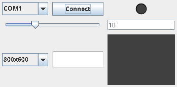
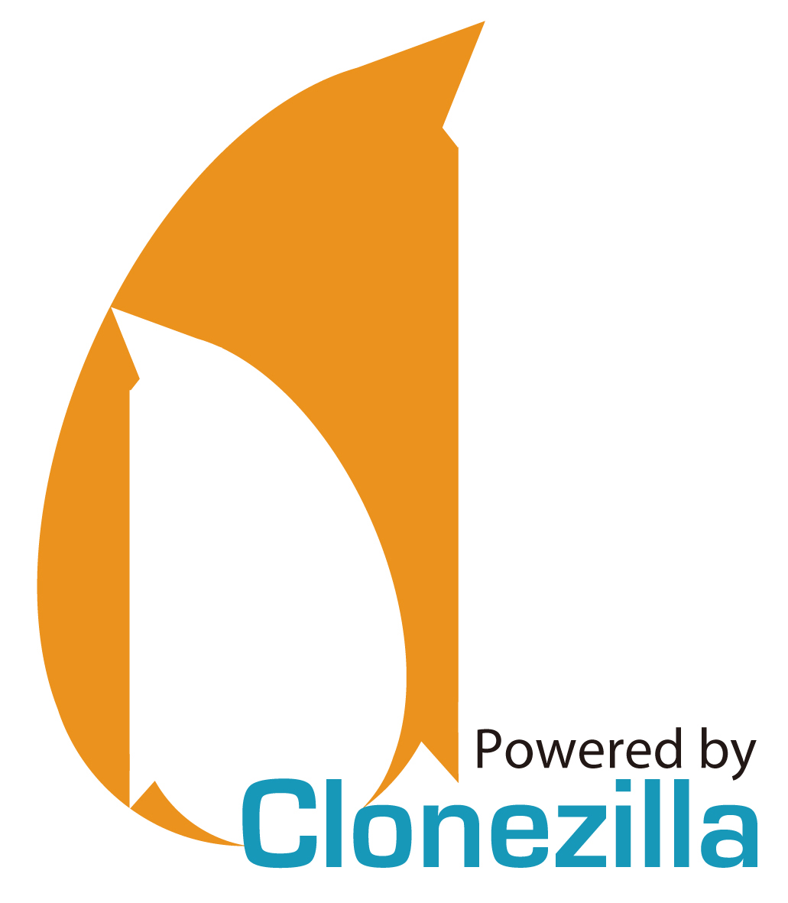

Project Overview
Greetings, fellow developers! I hope you are all doing well.
First and foremost, my sincere apologies for unexpectedly taking down my previous blog at ://wordpress.com.
I am officially back to share some remarkable hardware and software integration projects that are bound to turn heads in any engineering lab or academic setting.
Thanks to a few colleagues, I integrated a highly efficient dynamic-link library (inpout32.dll) compatible with Windows environments. This library allows low-level port functions to be effortlessly executed within the classic Borland C++ 6.0 IDE.
Furthermore, applications compiled with this IDE can be seamlessly executed on Linux distributions utilizing the Wine compatibility layer.
The complete source code of my developments is entirely free and available for download at the bottom of this section.
🔧 Looking for Borland C++ 6.0 to compile this project?
💿 Get IDE on WinWorldScreenshot (Widescreen Format)

Demonstration Video
🚀 Ready to explore the codebase?
📦 Download Source Code (.ZIP)PRO Data Acquisition Card

LDR Motor Control
Simulate real-time variables and dynamic visual feedback within the schematic workspace, or watch the live demo.
Interactive Schematic


.png)
LDR Current 0mA
0
Hardware Demo Video
Mouse Pointer IR Control
Control your system's mouse pointer using infrared signals and vintage hardware hacking.
Hello friends! Here is an awesome engineering project that I have been continuously developing since 2019.
The project originally began as an initiative to automate simple repetitive tasks under Windows environments. However, due to the workplace constraints I faced at the time, I was restricted from saving those automated scripts. This initial setback highlighted how such custom development fields are sometimes overlooked, but it only fueled my drive to keep iterating.
One day, I was discarding a broken DVD Player but decided to preserve its Remote Control. Within a few days, I realized it was the perfect candidate for hardware recycling!

Back then, I started decoding IR signals with a classic 3-pin IR Receiver. I still fondly remember my custom mnemonic rule for the schematics pinout layout: "Leaving the Hospital, setting foot on Earth, and getting nourished" (representing Output, GND, and Vcc), read precisely from left to right.
After a few weeks of programming in C++, I discovered an excellent IR Decoder manufactured by Vishay. I also sourced a highly convenient interface cable: a USB-to-TTL to RS232 COM Port adapter.
I was absolutely thrilled when I saw how effortlessly these components (the Decoder and the Adapter) worked straight out of the box with a lightweight C++ application, accurately parsing the function signals from the remote control.
Naturally, I received invaluable support from the UPV.net community. Direct manipulation—and let alone reading—of the serial COM port would not have been possible without the excellent library implementation developed by that institution (Polytechnic University of Valencia). I have included that application extension, which can be easily set up within Borland C++ using this comprehensive step-by-step guide:
🔗 Official ComPort Installation Guide
📖 View Guide on UPVAfter a few weeks of benchmarking the IDE and performing dozens of technical queries on Google, I successfully managed to control the system mouse pointer using my custom C++ software environment.
Hardware Components

Vishay Device

USB Adapter

The Modern Era & Java Build
Today, advanced remote control hardware features full native compatibility with 64-bit architectures. With minor adjustments, you can deploy a standalone 'Wii-Motion' style IR Remote Control without any wired constraints—simply boot the hardware and pair it over Bluetooth.
Furthermore, I engineered a fully 64-bit compatible Java environment for this deployment:

Linux Mint Accessibility & Video Demo
During these active deployment phases, I was deeply grateful to have this subsystem integrated into a broader Accessibility Framework. Today, we can control computer cursor tracking out of the box simply by enabling the native accessibility subsystem in modern Linux Mint distributions!
Examine the real-time hardware tracking responses in the video workspace on the right.
Linux Openbox O.S.
Revive legacy 32-bit hardware architectures with high-performance customized desktop environments.
Since 2010, I have been deeply passionate about optimizing 32-bit Linux operating systems, discovering that the audio performance ceiling of my host machine could be increased by over 50%.
Through meticulous low-level optimization and deep system tuning, I managed to boot a legacy netbook in under 15 seconds! Working extensively within this ecosystem—long after industry support for legacy systems has shifted—there are still some outstanding lightweight Linux distributions left to deploy and evaluate.
While a 32-bit architecture might not be a mainstream option today, if you enjoy restoring vintage computers and granting them a second life, this custom configuration provides the absolute best performance metrics available.
💿 Installation Instructions:
To deploy this customized ISO build, you must first log out of the default Openbox session, then log in to the Cinnamon desktop workspace using the standard live distribution credentials:
👤 User: mint // 🔑 Password: live
Once inside the Cinnamon window manager, effortlessly execute the complete system installation via the main deployment shortcut located directly on your desktop workspace.
Desktop Workspace View
Performance Demonstration
📦 Linux Mint DE 6 (x86) Custom Deployment
Features a tailored dual-desktop composition incorporating the ultra-lightweight Openbox Window Manager. Engineered specifically to enable older 32-bit hardware configurations to seamlessly achieve fluid 720p HD streaming playback using VLC Media Player.
Clonezilla HowTo
Learn how to backup, clone, and restore your drives efficiently using open-source infrastructure tools.
Welcome to the ultimate technical reference guide for automated system deployment and bare-metal disk imaging workflows!
Clonezilla stands as an industry-standard, high-performance open-source partition and disk imaging program. It is precisely engineered to assist system administrators with bare-metal backup, data recovery, and massive unicast/multicast client cloning tasks.
In this walkthrough, you will find meticulous, step-by-step documentation to mirror your local drives securely, ensuring absolute data integrity during mass system migrations or hardware storage upgrades.
Clonezilla Software Logo

Video Tutorial Walkthrough
VLC Remote HTTP Server Setup
Transform VLC Media Player into an HTTP-based remote control server using embedded Lua scripts.
Dear friends, in this technical walkthrough you will learn how to configure a native VLC Media Player instance to act as a standalone HTTP server, allowing you to use it completely as a remote control station. As detailed below, this grants you full wireless authorization to switch media library playlist tracks, adjust master volume parameters, or manage playbacks directly from your mobile device.
By implementing this mechanism, I unlocked a custom audio-streaming setup while riding my bicycle outdoors. Whenever an unappealing track comes up, I can easily skip it over the local network without needing to physically interact with the desktop interface. It works flawlessly as a robust hardware remote control substitute!
Step-by-Step Server Deployment
Launch the Application
Open your local instance of VLC Media Player on your workstation host machine.
Access Advanced Preferences
Navigate to the main menu bar at the top, open the Tools directory, and select Preferences. Once the configuration panel boots up, look at the bottom-left corner under "Show settings" and activate the All radio button to expose the advanced parameters tree.
Enable the Web Interface Subsystem
In the advanced tree navigation panel, look under the Interface branch and expand Main interfaces. From there, locate and check the Web checkbox. This initializes the internal HTTP module layout (Interfaces ---> Main interfaces ---> Web).
Configure Lua HTTP Server Password
Drop down further under the Main interfaces directory and click directly on the Lua module. Move to the main configuration window on the right side and define a secure authentication token inside the Password input field.
Commit and Save System Changes
Click on the Save button at the bottom of the active preference workspace to flush and write the configuration parameters directly to your local system environment files.
Verify Network Connection Layer
Ensure that your host machine maintains an active local network connection, establishing a solid baseline for wireless communication across your subnet infrastructure.
Retrieve Host Local IP Address
Query your system terminal or active network router assignment to fetch your specific host local IP address (e.g., 192.168.1.X), which is critical for targeting the remote server link.
Link Your Mobile Remote Controller
Launch the VLC Server control application from your smartphone or mobile interface device. Provide the host IP address and the secure authentication token you defined earlier to establish a persistent remote connection link.
Live Operation & System Integration Video
Check out this active hardware and software testing deployment in the parallel media panel. It details the fluid real-time responses and immediate media library switching capabilities over the established local server environment setup.
Support & Donations
If you like these projects, consider supporting my work.
Support TeraHertz Projects
Your support helps maintain the site online and funds new open-source hardware developments and digital accessibility research architectures.
erkbra